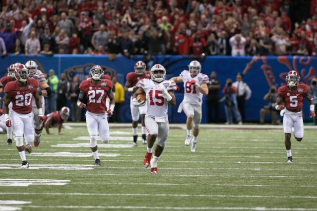

Ohio State vs Alabama | Sugar Bowl | 2014
This semi final game took place in the first ever College Football Playoff between powerhouse Alabama and blueblood Ohio State. Many believed that Ohio State did not deserve to be in the playoff and would get destroyed by Alabama. This all time classic ended in an Ohio State win with one of the most iconic plays in the history of the game cementing the victory for Ohio State and catapulting them into the National Championship game that they would eventually win.

Down 21-13 late in the 2nd quarter, Ohio State drove the ball down the field into the Alabama 10 yardline. Ohio State badly needed to get into the endzone soon with only 19 seconds left on the clock. Quarterback Cardale Jones in only his second start of his career at Ohio State, took the snap and immediately handed the football off to wide reciever Jalin Marshall who ran to the right side. Fellow reciever Evan Spencer came in motion and recievd the lateral from Jalin Marshall. As Spencer steadied himself, it became clear to spectators that Spencer has going to throw. Evan Spencer found the laces and lofted a beautiful throw to the back left of the touchdown. As the ball barely slipped over the hand of the Alabama defender and into the hands of star reciever Michael Thomas, the crown exploded. Ohio State scored a massive touchdown off the back of brilliant playcalling and playmaking.
Three minutes and thirty-seven seconds left on the clock. Ohio State - 34. Alabama - 28. Ohio State has been backed up in their own 20 several drives in a row. Ohio State is a few minutes away from booking their unlikely ticket to the first ever College Football Playoff National Championship game. On a 1st down and 10 from their own 15, Cardale Jones took the shotgun snap and quickly handed the ball off to stud running back Ezekiel Elliot. As Elliot searched for a hole, he suddenly burst through a hole and with blazing speed, raced to the endzone. In 13 seconds, Ezekial Elliot essentially sealed the game for Ohio State. One of the most iconic plays in College Football history and certainly in Ohio State History has come to be known as "85 yards through the Heart of the South."
